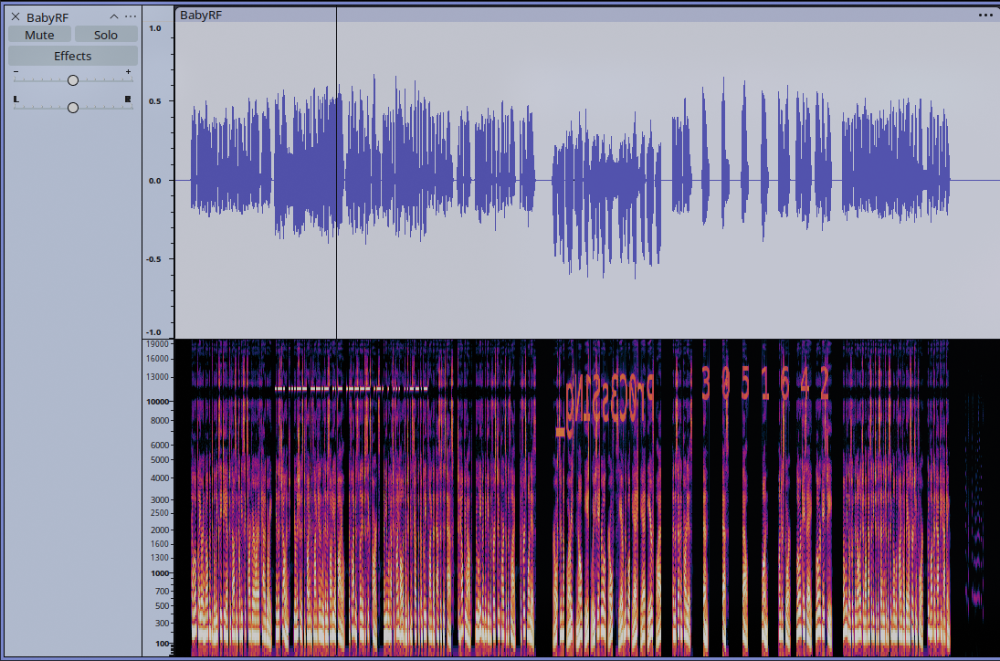
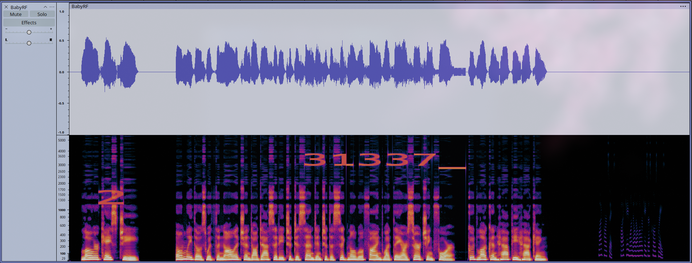
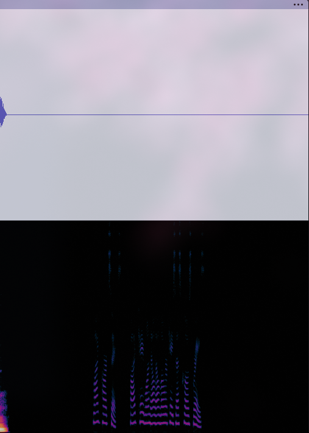
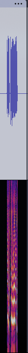

BabyRF
> CTF: L3akCTF 2026
> Category: Hardware / Rf
> Difficulty: Easy
> Solves: 63
Description
I made a nice flag for our beginner challenge but I accidentally dropped it and it broke into pieces. I collected them all into this cozy little .wav file for you to find!
The flag consists of six case-sensitive parts. The fourth part is all uppercase.
Files provided: BabyRF.wav
Approach
The challenge involves analyzing an audio signal containing flag fragments hidden across different layers.
The flag was assembled sequentially by solving six distinct parts:
1. Audible Analysis (Parts 1 & 2): Listening to the audio reveals an inverted voice track and shuffled characters. Reversing the file in Audacity yields L3AK{4uD10_S1gNaL_.
2. Spectrogram View (Part 3 & 4): Opening the file in Audacity's Spectrogram multi-view exposes visual text Pr0C3sS1Ng_ along with visual Morse code. Decoding the Morse code gives R3QU1RES_ (the 4th part, matching the hint of being all uppercase).
3. Sample Rate Adjustments (Part 5): A strange string of numbers 3051642 appears visually in the spectrogram. Lowering the sample rate reveals the real numbers 31337_ (definition of guessing).
4. Signal Amplification & Time-Stretching (Part 6): An apparently silent section at the end contains a heavily attenuated high-frequency waveform. Amplifying the region and slowing down playback speed makes the final piece audible: 5K1LLs}.
Technical Analysis
Signal & Audio Forensics
Execution Steps & Spectrogram Findings
1. Reversing & Spectrogram Inspection
Opened BabyRF.wav in Audacity and switched the track view to Spectrogram. This immediately rendered hidden text and Morse code embedded in the frequency plot:

2. Decoding Morse Code & Visual Text
.-. ...-- --.- ..- .---- .-. . ... ..--.- decoded to R3QU1RES_.Pr0C3sS1Ng_ was visible on the upper frequency axis.L3AK{4uD10_S1gNaL_Pr0C3sS1Ng_R3QU1RES_3. Sample Rate Pitch Adjustment
The initial visual text 3051642 was kinda strange. I tried lowering the project sample rate which rendered the characters 31337_:

4. Amplifying Silent End Sequence
Analyzing the tail end of the waveform revealed an anomaly with near-zero amplitude:

Applying a +20dB Gain / Amplify effect brought out the hidden high-pitch audio stream:

Slowing down the playback speed by 50% made the speech intelligible, giving the final piece: 5K1LLs}.
Flag
L3AK{4uD10_S1gNaL_Pr0C3sS1Ng_R3QU1RES_31337_5K1LLs}